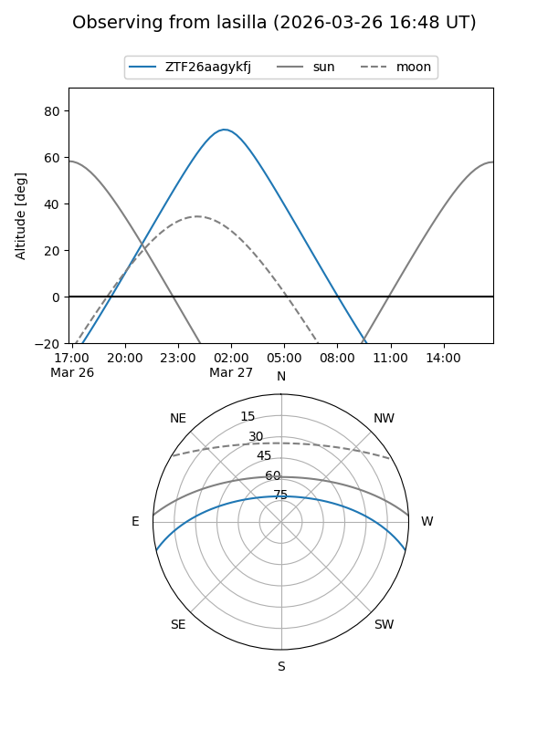
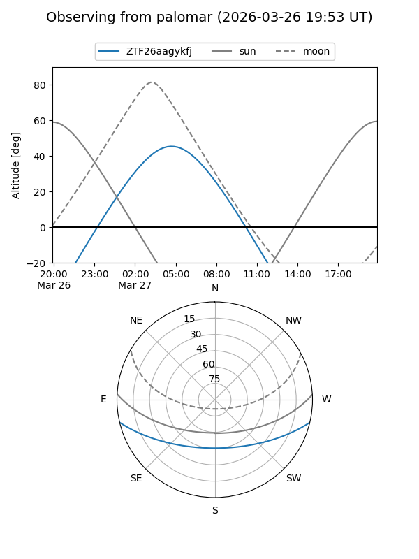

ZTF26aagykfj
Target ZTF26aagykfj at 2026-03-27 06:38
Aliases and brokers:
FINK: link
Lasair: link
ALeRCE: link
alt names
ZTF26aagykfj (ztf,fink_ztf)
Coordinates:
equatorial (ra, dec) = 137.8542,-11.09163
equatorial (HMS+DMS) = 09:11:25.00,-11:05:29.86
galactic (l, b) = (240.9538,+24.40306)
Flags:
Photometry:
last ztfg=16.13
1 ztfg detections
Lightcurve
Visibility


Additional plots